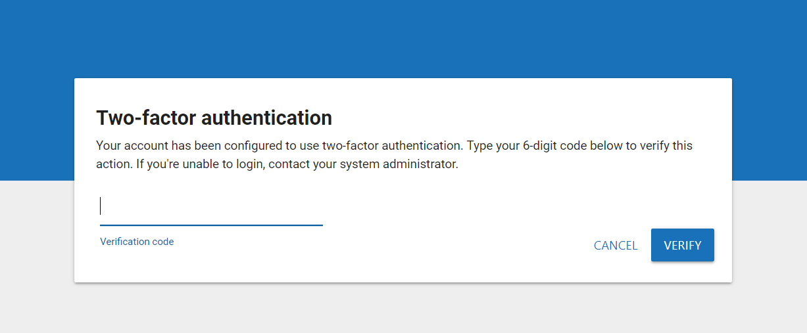

Note: Multi-Factor Authentication and Two-Factor Authentication are used interchangeably in this topic.
Administrators can bolster their security by enabling multi-factor authentication (MFA) for users logging in to
Common authentication apps available for download include: Google Authenticator, Microsoft Authenticator, FreeOTP, Authy, and Protectimus Smart OTP.
For answers to common questions related to multi-factor authentication, see
|
|
Note: Multi-Factor Authentication and Two-Factor Authentication are used interchangeably in this topic. |
Administrators can enable multi-factor authentication in the System Manager. After signing in to
|
|
Note: Before enabling multi-factor authentication, your server should be synced to an NTP server. This ensures consistency between |
The System Manager opens. In the left pane of the System Manager, click Security Settings.
Once multi-factor authentication has been enabled, users must synchronize an authentication app on a secondary device (such as a mobile phone) with their
Download an authentication app to a mobile phone or other secondary device. There are many authentication apps available for download, such as Google Authenticator and Microsoft Authenticator. The only requirement for the authentication app is that it uses a time-based, one-time passcode.
Click Verify. If valid, the authentication app is successfully configured and
|
|
Note: If invalid, wait for a new code to generate in your app. Input the new code, ensuring that all digits are correct and that you click Verify before the code becomes invalid. If still unable to sign in, contact an Administrator for assistance. |
For all subsequent logins, after inputting your user credentials on the

Related Topics